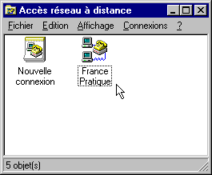
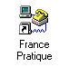
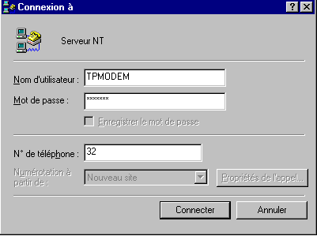
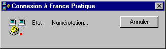
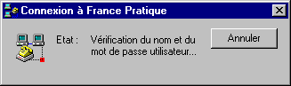
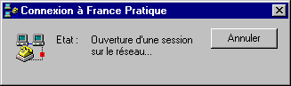
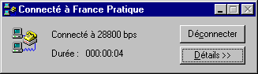

WINDOWS 95 et Internet
Configuration d'une connexion en dial-up IP
Document inspiré de
France-Pratique
6ème étape : Première connexion
Vous êtes maintenant prêt pour tenter votre première connexion à Internet via le serveur "France Pratique".
Vérifiez que votre modem est correctement connecté à votre machine et au réseau téléphonique. Mettez le sous tension si ce n'est déjà fait.
- Double-cliquez sur l'icône "France pratique" dans la fenêtre "Connexion à un réseau distant" afin de lancer le script de connexion (vous pouvez également faire glisser cette icône sur le bureau afin de l'avoir constamment à portée de souris).
 ou 
- La fenêtre de connexion à France Pratique s'ouvre.
- Dans le champ "Nom d'utilisateur", entrez votre login suivi de @pratique.fr.
- Dans le champ "Mot de passe", entrez votre mot de passe.
- Cochez la case "Enregistrer le mot de passe". Ainsi, vous n'aurez pas à rentrer ces informations à chaque fois.

- Cliquez alors sur "Se connecter".
- Le modem prend la ligne, numérote et négocie la connexion avec le serveur.
Une suite de fenêtres apparaissent alors, vous indiquant le déroulement de la connexion :




Cette fenêtre vous indique la vitesse à laquelle votre modem a réussi à se connecter, et le temps écoulé.
Cliquez sur le bouton "Déconnecter" lorsque vous désirerez arrêter la connexion.
Pour l'instant laissez cette fenêtre (ou réduisez la) et lancez le programme client TCP/IP de votre choix (Netscape ou Eudora par exemple)
Vous voilà prêt pour vous ballader sur Internet...
ISIMA : en fait, il n'y a qu'un seul serveur, sans nom (DNS) et d'adresse-IP 193.55.95.1
© FRANCE PRATIQUE
Sommaire
Etape 5